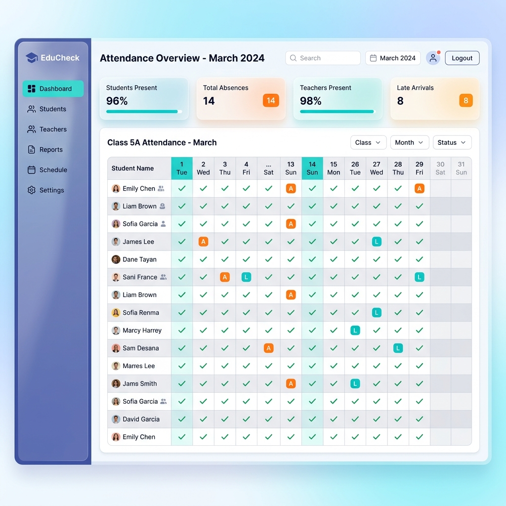

Olvídate del papel. Automatiza el control de asistencias, licencias, cursos y horarios de tu personal en tiempo real, con una interfaz increíblemente rápida.

Un ecosistema diseñado específicamente para el ritmo y las complejidades de las instituciones educativas modernas.
El sistema asume "Presente por defecto" para todos. Solo registras las inasistencias, ahorrando horas de carga manual de datos.
Gestiona artículos del estatuto docente con facilidad. Calcula licencias, francos y enfermedades sin tener que memorizar códigos.
Curva de aprendizaje cero. Interfaz familiar con pestañas por meses, resúmenes anuales y contadores de faltas compactos.
Módulos separados y optimizados para la gestión de docentes y personal no docente, cada uno con sus propias reglas y criterios de vacaciones.
Asigna cursos, materias y configura los horarios de cada profesor para tener un mapa completo de la institución.
Obtén un desglose interactivo en 1 clic gracias a los popovers inteligentes, evitando sobrecargar la pantalla con datos innecesarios.
Únete a las instituciones que ya optimizaron su control de presentismo con Sintek.
Comenzar Ahora